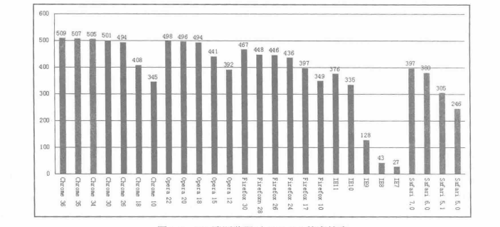
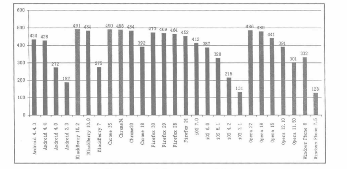

HTML5是对浏览器和网页开发技术的改进，是一系列 Web标准草案的集合。
HTML5能始终坚持不断发展，并很快得到广泛认可，与其在制定之初就确立的核心理念有很大的关系。这些核心理念概括起来就是——兼容性、实用性、互操作性以及普遍可访问性。
HTML5可以让网页做得和原生应用一样强大、一样优秀。HTML5的优势包括以下几点：
（1） Canvas带来实时绘制的便利。
（2） Web notification带来更友好的桌面通知。
（3） 基于geolocation提供的位置信息，网页可以提供更好的服务。
（4） 网络实时通信。
（5） Video便签带来可与内容交互的视频。
（6） 使用application cache并配合本地存储，打造离线访问的新体验。

数据显示，移动平台上主流浏览器对HTML5标准的支持度均高于60%，如图所示：

随着移动设备的快速发展及更新换代，移动端的处理能力将有显著提高。同时，随着HTML5从业者数量的不断增加和技术能力的不断提高，以及HTML5工具的不断完善，一些商业剧透的杀手级HTML5应用正陆续出现。
相对于PC平台而言，移动平台一直是开发者更为关心的，因为移动平台浏览器品种较少，版本也普遍集中在最新正式版，同时，由于移动设备的更新换代熟读要比PC更快，硬件支持和浏览器的状况都要比PC平台的状况更好。